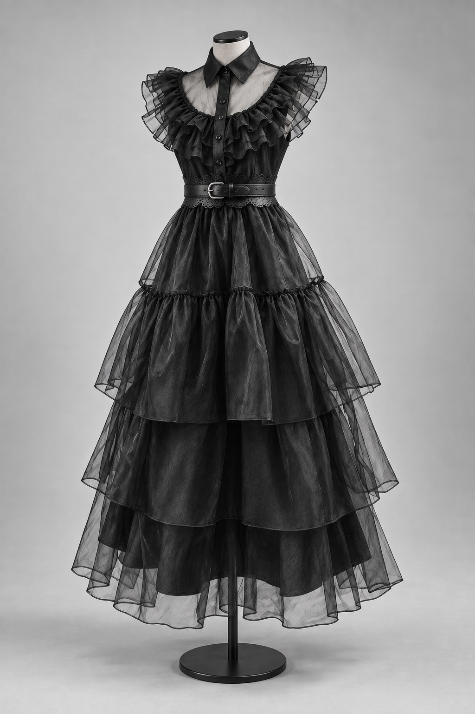
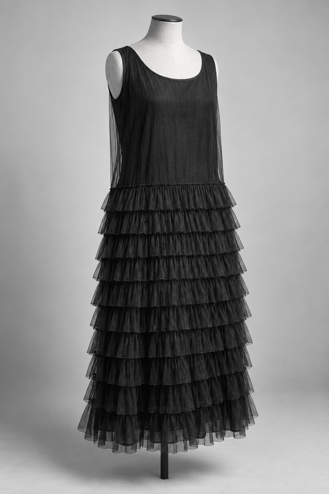
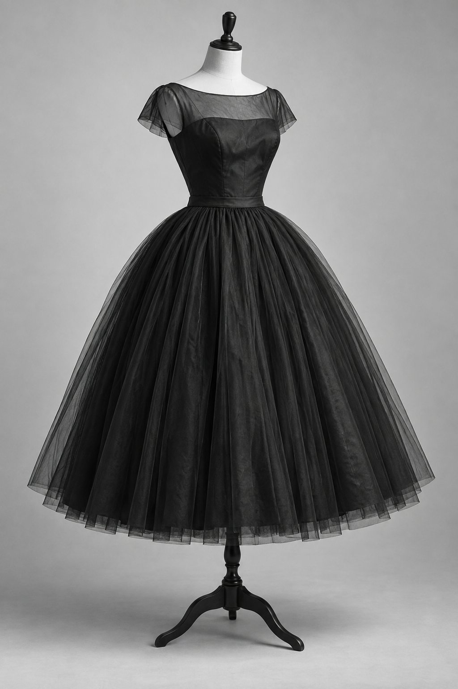

The focus area of my Major Textiles Project is costume. Costume establishes a character before dialogue or action, and that idea has driven every decision in this folio.
The character is Wednesday Addams, dressed for a school dance she did not want to attend. The dress she wears to that dance in the series (image 1) is my starting point, and the audience will know it. On a stage it has to read at performance distance under gym lighting: one black silhouette and a skirt that moves when she does. It would not be worn as modern daywear, and that is the point.
The whole scheme is black on black in two textures - a matte satin dress and sheer tulle tiers - so the audience reads shape and movement rather than colour. That is the screen dress's own idea, and I kept it.
Images 2 to 4 are my comparisons with three periods of black dress. I use the closed line of the 1905 study, the repeated tiers of the 1926 study, and the skirt proportion of the 1955 study. These are my design choices, not claims about the screen designer's sources.
The innovation is that the costume converts. The tiered skirt is a separate overskirt hung from a belt band that hooks at the side, and the white collar snaps on. Overskirt on and collar off is the dance dress. Overskirt off and collar on is the plain black dress the character wears every day in the same series. One garment serves two scenes, and the median change takes 48 seconds in the wings (Experiment 8).
My adaptation needs a quick change for a live audience. The carrier takes the tiers into their own band, so they can be removed without opening the dress. A flared carrier also clears the satin hem. The collar attaches separately; the dress remains finished in both scenes.
Three smaller decisions are also mine. The uneven tiers of the original are regularised and graded, 18, 26 and 34 cm, so the skirt widens towards the hem and moves in a delay when she turns. The ruffled cap sleeve becomes a long sheer sleeve with a satin cuff, closing the line as the 1905 dress does. The buckle goes, and the belt becomes the band that carries the overskirt.